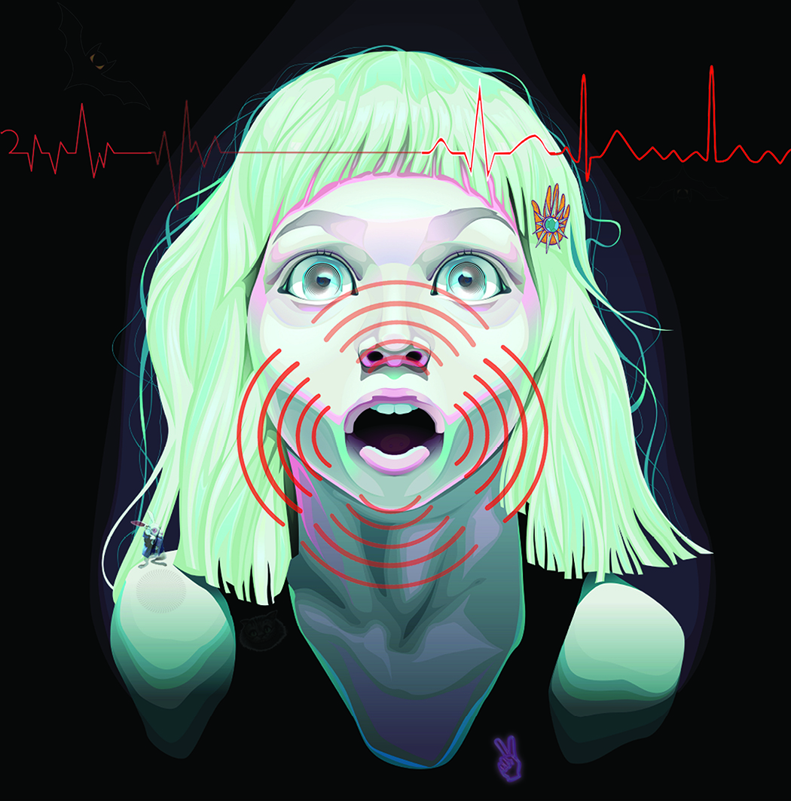

"Anxious?"
This project is about a teenager who's starting to experience and being taken over by anxiety, due to the consumption of a psychedelic drug for the very first time. She appears to be hypnotized because her senses are being disoriented due to the side effects of the drug. Within the dark background the eyes of some dark creatures are slowly creeping in as the drug takes more effect.
The reason why I chose this topic for the art-piece is because I have a friend who had a terrible experience with a psychedelic drug. Every individual has a different experience and reaction to psychedelics, it can be pleasing or horrifying when taking them for the very first time, or even for the second time. Psychedelics are unpredictable, and I know that it is tempting to try them but putting one’s mind at risk is not worth the trip.
